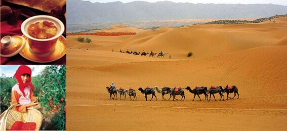
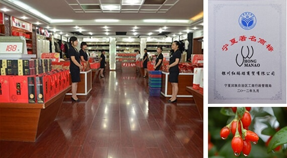
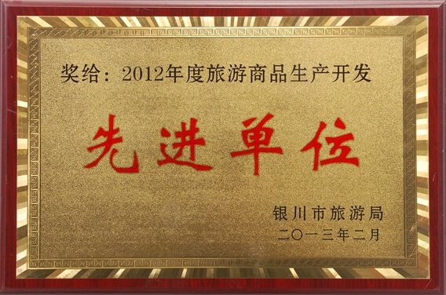
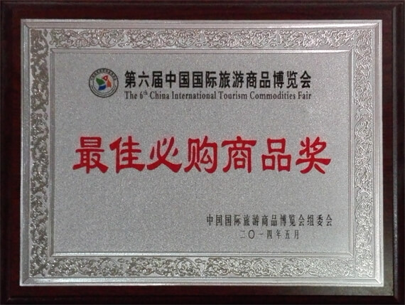

银川红玛瑙商贸有限公司，前身为宁夏农科院园艺研究所红玛瑙枸杞生态观光园，成立于2000年，位于银川市西夏区滚钟口3.5公里处，距银川市18公里，交通便利,占地270亩,是银川市目前最大的体验式枸杞生态观光园。
2008年正式注册成立公司,公司以“打造宁夏知名品牌，弘扬宁夏枸杞文化”为宗旨，立足于宁夏土特产品、旅游产品的研发、生产和销售工作，争取在几年内创建中国驰名商标、诚信单位，做宁夏一个最具影响力的旅游品牌。
经过近十年的发展，“红玛瑙”已经从单一的枸杞种植、销售，演化成为遍及干果、茶饮、休闲食品、养生保健等多元化、全系列的枸杞制品。现旗下运营着国家AA级旅游景区——银川红玛瑙枸杞观光园和红玛瑙土特产精品店，公司的电子商务也在积极开展，形成线上、线下全方位的销售局面。2013年天猫红玛瑙旗舰店正式上线运营。景区的展厅也由原来的二百平米的土特产展厅发展为现在的一千五百平米的购物商超，主要经销宁夏特产及西北土特产品,品种齐全、琳琅满目，由原来的年接待游客二万人次发展为现在的近十万人次。由原来的无自主品牌发展为有自主品牌和产品，我公司注册商标被评为“宁夏著名商标”，出品的枸杞以其“粒大、肉厚、皮薄、味甘”的品质深受广大消费者的好评。在2014年第六届中国旅游产品博览会上被评为“最佳必购产品”、“中林优森”国家林业局旗舰店入驻产品。2015年在自治区旅游商品大赛中取得银奖。
 公司经过多年努力，始终以质量求发展，以科研为动力，以质量求生存，以市场为方向，以创新求发展，使企业品质不断得到提升，取得了良好的社会效益和经济效益，获得了来自社会各界的荣誉和好评，曾先后多次被评为“消费者信得过单位”、“先进单位”、“最受百姓喜爱的十佳信誉企业”、“诚信建设先进企业”等荣誉。